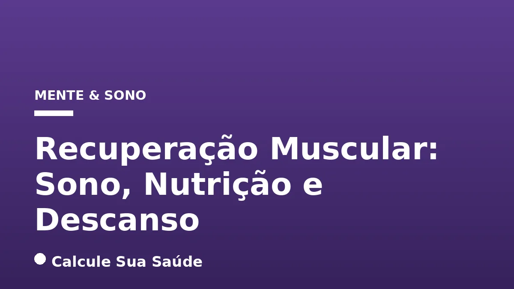

Aviso médico importante
Este conteúdo é educativo e informativo e não substitui a consulta, o diagnóstico ou o tratamento de um profissional de saúde. Em caso de sintomas, procure orientação médica.
Índice do Artigo
- 1. A Recuperação Muscular: Definição e Conceitos Fundamentais
- 2. O Sono: A Ferramenta de Recuperação Mais Poderosa e Subestimada
- 3. Estratégias para Otimizar o Sono e Maximizar a Recuperação
- 4. A Nutrição como Alicerce da Reconstrução Muscular
- 5. Proteínas: Os Blocos Construtores Essenciais para a Reparação
- 6. Proteínas: Os Blocos Construtores Essenciais para a Reparação
- 7. Carboidratos: Combustível para a Performance e Recuperação
- 8. Gorduras Saudáveis e Hidratação: Suporte Vital à Recuperação
- 9. O Poder do Descanso: Supercompensação e Prevenção de Overtraining
- 10. Sinais de Alerta: Quando o Corpo Pede Descanso
- 11. Diagnóstico da Recuperação Insuficiente e Síndrome de Overtraining
- 12. Prevenção e Tratamentos com Respaldo de Evidência
- 13. Mitos Comuns vs. O Que a Ciência Diz sobre a Recuperação Muscular
- 14. Suplementação na Recuperação Muscular: O Que Realmente Ajuda?
- 15. Considerações Finais e a Importância da Abordagem Individualizada
- 16. Perguntas frequentes
Após um treino intenso ou qualquer esforço físico significativo, nossos músculos não se tornam mais fortes ou resistentes imediatamente. Na verdade, eles entram em um estado de microlesões, depleção de energia e inflamação. É no período pós-esforço, durante a fase de recuperação muscular, que a verdadeira “mágica” acontece. Este processo fisiológico complexo é fundamental não apenas para o aumento do desempenho atlético, mas também para a prevenção de lesões e a manutenção da saúde geral.
A recuperação muscular é a pedra angular para que o corpo possa reparar as fibras musculares danificadas, repor as reservas de energia esgotadas e reduzir a cascata inflamatória desencadeada pelo exercício. Sem uma recuperação adequada, o corpo não consegue se adaptar e se fortalecer, levando a um platô no desempenho ou, pior, à síndrome de overtraining e a um risco elevado de lesões. Compreender e otimizar este processo é, portanto, tão importante quanto o próprio treino.
Neste artigo aprofundado, exploraremos os três pilares essenciais da recuperação muscular — o sono, a nutrição e o descanso — desvendando como cada um contribui para a regeneração e supercompensação. Abordaremos as evidências científicas por trás de cada componente, desmistificaremos conceitos comuns e forneceremos orientações práticas para que você possa maximizar sua recuperação e, consequentemente, seus resultados e bem-estar.
Em resumo
- A recuperação muscular é um processo fisiológico vital para reparar tecidos, repor energia e adaptar o corpo ao estresse do exercício, sendo crucial para o desempenho e prevenção de lesões.
- O sono de qualidade é a ferramenta de recuperação mais potente, liberando hormônio do crescimento (GH) e regulando hormônios como cortisol e testosterona, sendo 7 a 9 horas por noite o ideal.
- A nutrição adequada, com proteínas para reconstrução, carboidratos para reposição de glicogênio e gorduras saudáveis para reduzir a inflamação, é indispensável para o suporte metabólico da recuperação.
- O descanso, tanto passivo quanto ativo, permite a supercompensação muscular, tornando os músculos mais fortes e resistentes, e é fundamental para evitar a síndrome de overtraining.
- Sinais como dores prolongadas, queda de rendimento, cansaço constante e alterações de humor indicam recuperação insuficiente e a necessidade de ajustar a rotina.
- Estratégias como massagem e imersão em água fria podem auxiliar na redução da dor muscular, enquanto a otimização do sono e da dieta possuem forte respaldo científico para a recuperação.
1. A Recuperação Muscular: Definição e Conceitos Fundamentais
A recuperação muscular é um processo fisiológico complexo e multifacetado, essencial para qualquer indivíduo que se submeta a esforço físico, seja um atleta de alto rendimento ou um praticante de atividade física regular. Ela se define como o período em que o corpo repara as fibras musculares danificadas, repõe as reservas de energia esgotadas, reduz a inflamação e se adapta ao estresse imposto pelo exercício. Este processo é crucial para o aumento do desempenho atlético, o ganho de força e resistência, e a prevenção de lesões.
Durante o exercício intenso, os músculos são submetidos a um estresse mecânico e metabólico significativo. Isso resulta em microlesões nas fibras musculares, depleção dos estoques de glicogênio (a principal fonte de energia muscular) e o desencadeamento de uma cascata inflamatória. A recuperação permite que o corpo não apenas repare esses danos em nível celular, mas também se adapte, tornando-se mais forte e resistente para futuros desafios. Este fenômeno de adaptação e fortalecimento é conhecido como supercompensação.
Tempo de Recuperação: Uma Variável Crucial
O tempo necessário para uma recuperação muscular plena varia consideravelmente, dependendo da intensidade, volume e tipo de exercício realizado, bem como do nível de condicionamento físico do indivíduo. Sessões de treino leves podem exigir apenas 24 horas para uma recuperação adequada. No entanto, treinos muito intensos, especialmente aqueles que envolvem levantamento de peso até a falha, podem demandar de 48 a 72 horas. Alguns estudos indicam que mesmo quatro séries de exercícios com carga moderada até a falha podem requerer mais de três dias para a recuperação total da força muscular. Ignorar esses períodos de descanso pode levar a uma recuperação incompleta e comprometer os resultados a longo prazo.
2. O Sono: A Ferramenta de Recuperação Mais Poderosa e Subestimada
Entre todos os fatores que influenciam a recuperação muscular, o sono é, sem dúvida, um dos mais potentes e, paradoxalmente, um dos mais negligenciados. É durante as fases mais profundas do sono, particularmente o sono de ondas lentas (NREM estágio 3), que o corpo realiza a maior parte de seus processos reparadores e anabólicos. Neste período, ocorre a liberação máxima do hormônio do crescimento (GH), um peptídeo essencial para a reparação de tecidos, a síntese proteica muscular e o metabolismo de gordura. A privação de sono, por outro lado, pode comprometer seriamente esses processos.
Regulação Hormonal e Impacto no Desempenho
Um sono de qualidade não apenas otimiza a liberação de GH, mas também desempenha um papel crucial na regulação de outros hormônios vitais. Ele ajuda a modular os níveis de cortisol, o hormônio do estresse, que em excesso pode ter efeitos catabólicos (degradando o tecido muscular). Simultaneamente, o sono adequado favorece a produção de testosterona, um hormônio anabólico fundamental para o crescimento e reparo muscular. A privação de sono, ao desregular esses hormônios, pode levar à fadiga muscular crônica, diminuição da coordenação motora, redução da capacidade de tomada de decisão e um aumento significativo do risco de lesões.
Estudos científicos corroboram a importância do sono. Indivíduos que dormem menos de 7 horas por noite apresentam um risco maior de lesões e uma recuperação mais lenta em comparação com aqueles que conseguem dormir de 8 a 9 horas. Uma meta-análise publicada na revista Sports Medicine em 2015 destacou o sono como a chave número um para uma recuperação muscular ótima após o exercício. Aumentar o tempo de sono em apenas 30 a 60 minutos por noite pode resultar em melhorias na velocidade, força muscular e resistência em 1 a 3%. Além da quantidade, a qualidade do sono é igualmente importante. A variabilidade da frequência cardíaca (VFC) é um bom indicador de um sono profundo e reparador, estando associada a uma melhor recuperação global. Para otimizar o sono, recomenda-se de 7 a 9 horas por noite, buscando completar de 4 a 6 ciclos de sono, cada um com aproximadamente 90 minutos. Para entender mais sobre distúrbios que afetam o sono, confira nosso artigo sobre Apneia do Sono: Sintomas, Diagnóstico e CPAP.
3. Estratégias para Otimizar o Sono e Maximizar a Recuperação
Dada a importância inquestionável do sono para a recuperação muscular, adotar estratégias para otimizá-lo é um investimento direto na sua saúde e performance. Priorizar o sono significa tratá-lo como uma parte integrante e não negociável da sua rotina de treinamento e bem-estar.
Práticas para um Sono Reparador
- Priorize a Duração Adequada: Busque consistentemente de 7 a 9 horas de sono ininterrupto por noite. A duração ideal pode variar ligeiramente entre indivíduos, mas essa faixa é a mais recomendada pela ciência.
- Mantenha uma Rotina de Sono Regular: Ir para a cama e acordar nos mesmos horários todos os dias, inclusive nos fins de semana, ajuda a regular seu ritmo circadiano, facilitando o adormecer e melhorando a qualidade do sono.
- Crie um Ambiente de Sono Repousante: Seu quarto deve ser um santuário para o sono. Mantenha-o escuro, silencioso e com uma temperatura agradável (geralmente mais fresca). Evite telas eletrônicas (celulares, tablets, computadores) pelo menos uma hora antes de dormir, pois a luz azul emitida pode interferir na produção de melatonina.
- Evite Estimulantes: Cafeína e álcool, especialmente nas horas que antecedem o sono, podem perturbar a arquitetura do sono e reduzir sua qualidade. A cafeína pode permanecer no sistema por horas, e o álcool, embora possa induzir o sono inicialmente, fragmenta-o e impede as fases mais profundas e reparadoras.
- Invista em Conforto: Um travesseiro e colchão adequados que ofereçam suporte correto ao pescoço, coluna e cabeça podem fazer uma diferença substancial na qualidade do sono, reduzindo dores musculares e tensões que podem impedir um descanso profundo.
A evidência científica para a otimização do sono é forte, com meta-análises e estudos demonstrando uma relação direta e causal entre a qualidade e quantidade do sono e a recuperação muscular, bem como o desempenho atlético. Tratar o sono com a seriedade que ele merece é um passo fundamental para qualquer pessoa que busca maximizar sua capacidade física e mental.
4. A Nutrição como Alicerce da Reconstrução Muscular
Se o sono é o arquiteto da recuperação, a nutrição é o canteiro de obras que fornece todos os materiais necessários para a reconstrução. Uma estratégia nutricional bem planejada é central para a recuperação muscular, fornecendo os nutrientes essenciais para reparar e reconstruir os músculos após o estresse do exercício. As intervenções nutricionais visam principalmente estimular a síntese proteica muscular, repor os estoques de glicogênio, reduzir o processo inflamatório e restaurar o equilíbrio hídrico e eletrolítico.
Princípios Nutricionais para a Recuperação
A ingestão adequada de macronutrientes (proteínas, carboidratos e gorduras) e micronutrientes (vitaminas e minerais) é crucial. Cada um desempenha um papel específico e interligado no processo de reparo e adaptação muscular. Uma dieta equilibrada e rica em alimentos integrais é o ponto de partida, mas a otimização para a recuperação muscular exige atenção a detalhes específicos, especialmente no período pós-exercício.
5. Proteínas: Os Blocos Construtores Essenciais para a Reparação
As proteínas são, sem dúvida, os
6. Proteínas: Os Blocos Construtores Essenciais para a Reparação
As proteínas são, sem dúvida, os "tijolos" fundamentais para a reconstrução muscular. Após o exercício, as microlesões nas fibras musculares exigem aminoácidos para serem reparadas e para que novas proteínas musculares sejam sintetizadas, um processo conhecido como síntese proteica muscular (SPM). A ingestão de proteínas de alta qualidade, ricas em aminoácidos essenciais, especialmente a leucina, pode aumentar significativamente a SPM após o exercício.
Recomendações de Ingestão Proteica
- Ingestão Diária Total: Para atletas e indivíduos ativos, a recomendação geral é uma ingestão diária entre 1,4 e 2,0 gramas de proteína por quilograma de peso corporal. Esta quantidade deve ser distribuída ao longo do dia em várias refeições para otimizar a SPM.
- Pós-Treino: No período pós-treino, a ingestão de 20 a 40 gramas de proteína completa (que contém todos os aminoácidos essenciais) é geralmente suficiente para maximizar a síntese proteica aguda. Fontes como carne magra, frango, peixe, ovos, laticínios (como iogurte grego e queijo cottage) e suplementos como o whey protein são excelentes opções. Para aprofundar no tema, leia sobre Whey Protein: Tipos, Benefícios e Uso Correto.
A escolha de fontes proteicas que também forneçam outros nutrientes importantes, como vitaminas do complexo B e ferro, pode potencializar ainda mais os benefícios para a recuperação e a saúde geral. A qualidade da proteína é tão importante quanto a quantidade, priorizando fontes com alto valor biológico.
7. Carboidratos: Combustível para a Performance e Recuperação
Os carboidratos são essenciais para repor os estoques de glicogênio muscular e hepático, a principal fonte de energia utilizada durante o exercício intenso. A depleção de glicogênio é um fator limitante da performance e pode retardar a recuperação. A ingestão adequada de carboidratos após o treino é crucial para reabastecer essas reservas e preparar o corpo para a próxima sessão de exercício.
O Papel da Insulina e as Recomendações
A ingestão de carboidratos também provoca um pico de insulina, um hormônio anabólico que desempenha um papel vital no transporte de glicose e aminoácidos para dentro das células musculares, auxiliando tanto na reposição de energia quanto na síntese proteica. A combinação de carboidratos e potássio após o exercício pode acelerar ainda mais a recuperação.
- Reposição Rápida: Para situações que exigem uma recuperação rápida (por exemplo, menos de quatro horas entre as sessões de treino), a International Society of Sports Nutrition (ISSN) recomenda a ingestão de carboidratos de alto índice glicêmico na proporção de 1,2 gramas por quilograma de peso corporal por hora, nas primeiras horas pós-exercício.
- Fontes de Carboidratos: Arroz, batata, frutas, pães integrais e massas são excelentes fontes. É importante diferenciar os carboidratos complexos, que fornecem energia de forma mais sustentada, dos açúcares simples, que devem ser consumidos com moderação. Para mais detalhes sobre o impacto do açúcar, confira nosso artigo sobre Açúcar: Efeitos no Corpo e Estratégias para Reduzir o Consumo.
A estratégia de ingestão de carboidratos deve ser individualizada, considerando o tipo e a duração do exercício, bem como as necessidades energéticas totais do indivíduo.
8. Gorduras Saudáveis e Hidratação: Suporte Vital à Recuperação
Além das proteínas e carboidratos, as gorduras saudáveis e a hidratação são componentes indispensáveis de uma estratégia de recuperação muscular eficaz. Ambos desempenham funções cruciais que apoiam a saúde geral e a capacidade do corpo de se reparar.
O Papel das Gorduras Saudáveis
As gorduras, especialmente os ácidos graxos ômega-3, são conhecidas por suas potentes propriedades anti-inflamatórias. Encontrados em peixes gordurosos como o salmão, sementes de linhaça e chia, e nozes, os ômega-3 podem ajudar a reduzir a dor muscular de início tardio (DMIT) e a inflamação sistêmica que ocorre após o exercício intenso. Embora não sejam uma fonte primária de energia para o exercício agudo, sua contribuição para a modulação da resposta inflamatória é vital para uma recuperação mais rápida e confortável.
A Essência da Hidratação
Manter-se adequadamente hidratado é fundamental para acelerar a recuperação muscular. A água é o principal componente do corpo e está envolvida em praticamente todas as funções metabólicas, incluindo o transporte de nutrientes para as células, a remoção de resíduos metabólicos, a regulação da temperatura corporal e a manutenção do volume sanguíneo. A desidratação, mesmo em níveis leves, pode comprometer a performance, retardar a recuperação e aumentar o risco de cãibras e fadiga.
A ingestão de líquidos deve ser contínua ao longo do dia, não apenas durante e após o exercício. Bebidas isotônicas podem ser úteis em treinos muito longos ou intensos para repor eletrólitos perdidos pelo suor, mas para a maioria das pessoas, a água pura é suficiente. Para saber mais sobre a importância da hidratação, consulte nosso artigo sobre Hidratação e Pedras nos Rins: Prevenção.
9. O Poder do Descanso: Supercompensação e Prevenção de Overtraining
O descanso é um dos aspectos mais importantes, mas frequentemente subestimados, da recuperação muscular. É durante os períodos de inatividade que o corpo tem a oportunidade de consolidar as adaptações induzidas pelo treino. O verdadeiro progresso muscular – o aumento da força, resistência e tamanho – não ocorre durante o exercício, mas nas horas e dias seguintes, quando o corpo se recupera e se adapta, um processo conhecido como supercompensação. Negligenciar o descanso é sabotar o próprio esforço de treino.
Tipos de Descanso e Periodização
- Descanso Passivo: Refere-se a pausas completas entre as sessões de treino, permitindo que o corpo se recupere totalmente sem qualquer demanda física. Isso inclui dias sem treino ou períodos de desaquecimento.
- Descanso Ativo: Envolve atividades de baixa intensidade, como caminhadas leves, ciclismo leve, alongamentos suaves ou ioga. O descanso ativo pode ser benéfico ao melhorar a circulação sanguínea, o que auxilia na remoção de resíduos metabólicos e no transporte de nutrientes para os músculos, acelerando a recuperação sem impor estresse adicional.
A periodização do treino é uma estratégia fundamental que incorpora o descanso de forma estruturada. Ela envolve a organização do treinamento em ciclos com diferentes intensidades e volumes, garantindo que haja tempo suficiente para a reabilitação e recuperação muscular entre as fases de maior demanda. Isso não só otimiza o desempenho, mas também é crucial para prevenir a síndrome de overtraining.
10. Sinais de Alerta: Quando o Corpo Pede Descanso
Ignorar os sinais de que o corpo precisa de descanso pode levar a um estado de fadiga acumulada, queda de desempenho e, em casos mais graves, à síndrome de overtraining. Reconhecer esses sinais precocemente é vital para ajustar a rotina de treino e evitar consequências negativas para a saúde e a performance.
Sintomas de Recuperação Muscular Insuficiente ou Overtraining
A tabela a seguir detalha os principais sinais de alerta que indicam que seu corpo pode estar precisando de mais descanso:
| Categoria | Sinais de Alerta |
|---|---|
| Físicos | Dores musculares que duram mais do que o normal (mais de 72h), sensação de peso ou rigidez ao acordar, cansaço que não passa mesmo com sono adequado, queda de rendimento nos treinos (dificuldade em completar exercícios antes gerenciáveis, sentir-se mais fraco ou lento), aumento do risco de lesões, urina escura (em casos graves de dano muscular, pode indicar rabdomiólise). |
| Mentais e Emocionais | Sono mais agitado ou insônia, irritabilidade e alterações de humor, falta de motivação para treinar, dificuldade de concentração, ansiedade. |
| Fisiológicos | Alterações na frequência cardíaca de repouso (geralmente elevada), perda de apetite, infecções frequentes (imunidade suprimida). |
A síndrome de overtraining é uma condição de estresse acumulado dos treinos que excede a capacidade de recuperação do corpo. Ela não é apenas uma fadiga física, mas um esgotamento sistêmico que afeta múltiplos sistemas corporais, incluindo o endócrino e o nervoso. Prestar atenção a esses sinais e agir proativamente é crucial para manter a saúde e a progressão no treinamento.
11. Diagnóstico da Recuperação Insuficiente e Síndrome de Overtraining
O diagnóstico da recuperação muscular insuficiente ou da síndrome de overtraining é predominantemente clínico, baseando-se na observação atenta dos sintomas relatados pelo indivíduo e na análise da queda de desempenho. Não existe um único exame laboratorial que confirme o overtraining, mas uma combinação de indicadores pode auxiliar no processo.
Abordagem Diagnóstica
- Anamnese e Observação Clínica: O médico ou profissional de saúde irá coletar um histórico detalhado dos sintomas, da rotina de treino, da qualidade do sono e dos hábitos alimentares. A percepção do próprio indivíduo sobre seu estado de fadiga e desempenho é um componente chave.
- Exame Físico: Pode revelar inchaço, pontos sensíveis ou dor à palpação muscular, indicando inflamação ou lesões. Em casos de suspeita de lesões musculares mais graves, como rupturas completas, o ultrassom pode ser utilizado para diferenciar os tipos de lesões de tecidos moles.
- Variabilidade da Frequência Cardíaca (VFC): A VFC é um marcador indireto do equilíbrio entre os sistemas nervosos simpático (resposta de luta ou fuga) e parassimpático (descanso e digestão). Uma VFC mais alta geralmente indica um melhor estado de recuperação e equilíbrio autonômico, enquanto uma VFC consistentemente baixa pode ser um sinal de estresse excessivo e recuperação inadequada.
- Exames Laboratoriais: Embora não sejam diagnósticos por si só, alguns exames podem fornecer pistas. Níveis elevados de cortisol basal (indicando estresse crônico), alterações nos níveis de testosterona, creatina quinase (CK) persistentemente alta (indicando dano muscular contínuo) e marcadores inflamatórios podem ser observados. Para mais informações sobre o estresse crônico, consulte nosso artigo sobre Cortisol e Estresse Crônico: Neurobiologia.
É fundamental ressaltar que o diagnóstico de overtraining é de exclusão, ou seja, outras condições médicas que possam causar sintomas semelhantes devem ser descartadas. A colaboração entre o atleta, treinadores e profissionais de saúde é essencial para um diagnóstico preciso e um plano de recuperação eficaz.
12. Prevenção e Tratamentos com Respaldo de Evidência
A prevenção e o tratamento da recuperação muscular inadequada e da síndrome de overtraining baseiam-se na otimização dos três pilares fundamentais: sono, nutrição e descanso. As estratégias devem ser integradas e adaptadas às necessidades individuais.
Otimização do Sono (Nível de Evidência: Forte)
- Priorizar de 7 a 9 horas de sono ininterrupto por noite: Essencial para a liberação de GH e regulação hormonal.
- Manter uma rotina de sono regular: Ajuda a sincronizar o ritmo circadiano.
- Criar um ambiente de sono repousante: Escuro, silencioso e com temperatura adequada.
- Evitar cafeína e álcool antes de dormir: Podem perturbar a qualidade do sono.
- Utilizar um travesseiro adequado: Oferece suporte correto e pode reduzir dores musculares que atrapalham o sono.
Estratégias Nutricionais (Nível de Evidência: Forte)
- Ingestão adequada de proteínas: 1,4 a 2,0 g/kg de peso corporal por dia, distribuídas em refeições, com 20 a 40 g de proteína completa no pós-treino para maximizar a síntese proteica.
- Reposição de carboidratos: Consumir carboidratos após o exercício para repor o glicogênio muscular. Em situações de recuperação rápida (menos de 4h entre treinos), carboidratos de alto índice glicêmico (1,2 g/kg/h) são recomendados.
- Hidratação: Manter-se bem hidratado é crucial para todas as funções metabólicas e transporte de nutrientes.
- Ômega-3: Consumo de alimentos ricos em ômega-3 (como salmão) para reduzir a inflamação.
- Creatina Monoidratada: Pode beneficiar o crescimento e reparo tecidual. Para mais informações, veja Creatina: Segurança, Dose e Benefícios.
Descanso e Recuperação Ativa (Nível de Evidência: Variável)
- Incluir dias de descanso na rotina de treino: Essencial para a supercompensação.
- Realizar atividades de baixa intensidade: Caminhada, alongamento, ioga para melhorar a circulação e eliminar metabólitos.
- Massagem: A terapia de massagem após um treino intenso pode reduzir a dor muscular, inflamação e fadiga percebida. Uma meta-análise encontrou que a massagem foi a técnica mais poderosa para melhorar a dor muscular de início tardio e a fadiga. (Evidência: Moderada a Limitada)
- Imersão em água fria (CWI): Pode reduzir a dor muscular em 24, 48, 72 e até 96 horas após o exercício, comparado ao tratamento passivo. Alguns participantes relataram melhora na recuperação/redução da fadiga imediatamente após. No entanto, a qualidade dos estudos é baixa. (Evidência: Moderada a Limitada)
- Crioterapia de corpo inteiro (WBC): A evidência atualmente disponível é insuficiente para apoiar o uso de WBC para prevenir e tratar a dor muscular após o exercício em adultos. (Evidência: Insuficiente)
- Alongamento e resfriamento (cooldown): O resfriamento (5 a 10 minutos de cardio de baixa intensidade) ajuda a diminuir gradualmente a frequência cardíaca. Alongar os músculos usados por cerca de 60 segundos após o resfriamento é recomendado, mas não há ligação clara com a redução da rigidez ou dor muscular. (Evidência: Limitada)
13. Mitos Comuns vs. O Que a Ciência Diz sobre a Recuperação Muscular
No universo do fitness e da saúde, muitos mitos persistem, especialmente no que diz respeito à recuperação muscular. É crucial basear as estratégias em evidências científicas para otimizar os resultados e evitar práticas ineficazes ou potencialmente prejudiciais.
Desmistificando Conceitos
A seguir, confrontamos alguns mitos populares com o que a ciência realmente nos diz:
| Mito Comum | O Que a Ciência Diz |
|---|---|
| A "janela anabólica" é um período muito curto e rígido após o treino. | Embora a ingestão de carboidratos e proteínas logo após o exercício acelere a reposição de glicogênio e reduza marcadores de dano muscular, o efeito não é igualmente relevante para todos. Para quem treina uma vez ao dia, atrasar a refeição pós-treino em até duas horas dificilmente compromete os resultados, desde que a ingestão total de nutrientes ao longo do dia seja adequada. O que importa de verdade é o total de proteínas e carboidratos consumidos ao longo do dia. A "janela anabólica" tradicional foi relativizada nos últimos anos. |
| Antioxidantes em altas doses aceleram a recuperação muscular e reduzem a dor. | Uma revisão Cochrane de 2017 e 2020 concluiu que a suplementação de antioxidantes em altas doses não parece reduzir a dor muscular de forma clinicamente relevante após o exercício. Não há evidências disponíveis sobre a recuperação subjetiva. Embora antioxidantes sejam importantes para a saúde geral, seu papel direto e isolado na aceleração da recuperação muscular pós-exercício em doses elevadas não é suportado por evidências robustas. |
| É possível "converter gordura em músculo". | Gordura e músculo são tecidos metabolicamente distintos. Gordura não se transforma em músculo. O que acontece é que, ao aumentar a massa muscular através do treinamento de força e nutrição adequada, o corpo se torna mais eficiente na queima de gordura, pois mais músculo requer mais energia para ser mantido. É um processo de recomposição corporal, onde a massa gorda diminui e a massa magra aumenta, mas não uma conversão direta. |
É fundamental buscar informações em fontes confiáveis e consultar profissionais de saúde e nutrição para orientações personalizadas e baseadas em evidências. A compreensão correta desses conceitos permite uma abordagem mais eficaz e segura para a recuperação muscular e o desempenho físico.
14. Suplementação na Recuperação Muscular: O Que Realmente Ajuda?
A indústria de suplementos oferece uma vasta gama de produtos que prometem acelerar a recuperação muscular. No entanto, nem todos possuem o mesmo nível de evidência científica. É importante focar nos suplementos que realmente podem fazer a diferença, sempre em conjunto com uma dieta balanceada e um estilo de vida saudável.
Suplementos com Respaldo Científico
- Proteína em Pó (Whey Protein, Caseína, Proteína Vegetal): Conforme discutido, a ingestão adequada de proteínas é crucial para a síntese proteica muscular. Suplementos proteicos são uma forma conveniente e eficaz de atingir as metas diárias de proteína, especialmente no pós-treino.
- Carboidratos (Maltodextrina, Dextrose): Para atletas que precisam de reposição rápida de glicogênio entre sessões de treino curtas e intensas, suplementos de carboidratos de alto índice glicêmico podem ser úteis.
- Creatina Monoidratada: A creatina é um dos suplementos mais estudados e eficazes para melhorar a força, potência e, indiretamente, a recuperação. Ela auxilia na ressíntese de ATP (adenosina trifosfato), a principal moeda energética das células, e pode beneficiar o crescimento e reparo tecidual.
- Ômega-3: Embora não seja um suplemento para ganho de massa muscular direto, os ácidos graxos ômega-3 (EPA e DHA) podem reduzir a inflamação e a dor muscular de início tardio, contribuindo para uma recuperação mais confortável.
É fundamental lembrar que suplementos são complementos e não substitutos de uma dieta equilibrada. Antes de iniciar qualquer suplementação, é altamente recomendável buscar orientação de um nutricionista ou médico para avaliar suas necessidades individuais e garantir a segurança e eficácia do uso.
15. Considerações Finais e a Importância da Abordagem Individualizada
A recuperação muscular é um processo altamente individualizado, influenciado por uma miríade de fatores que incluem genética, idade, nível de condicionamento, tipo e intensidade do treino, estresse diário e condições de saúde preexistentes. Não existe uma fórmula única que sirva para todos; o que funciona para um indivíduo pode não ser ideal para outro.
A chave para uma recuperação muscular otimizada reside na integração inteligente dos pilares do sono, nutrição e descanso. Cada um desses componentes interage e influencia os outros, formando um sistema complexo que, quando bem gerenciado, potencializa o desempenho e a longevidade atlética. Ignorar qualquer um desses pilares é comprometer o progresso e aumentar o risco de lesões e overtraining.
É fundamental ouvir o próprio corpo, prestando atenção aos sinais de fadiga, dor e queda de desempenho. Ajustar a rotina de treino, a dieta e os hábitos de sono com base nessas observações é um sinal de inteligência e autoconhecimento. A busca por uma recuperação eficaz não é um luxo, mas uma necessidade para quem busca maximizar seu potencial físico e manter uma vida ativa e saudável a longo prazo.
Este conteúdo tem caráter informativo e educacional e não substitui a consulta com um profissional de saúde qualificado. Sempre procure um médico, nutricionista ou fisioterapeuta para obter orientações personalizadas sobre sua saúde e plano de recuperação.
16. Perguntas frequentes
O que é recuperação muscular e por que ela é importante?
A recuperação muscular é o processo fisiológico pelo qual o corpo repara fibras musculares danificadas, repõe reservas de energia e reduz a inflamação após o exercício. É crucial para o aumento do desempenho, ganho de força e prevenção de lesões, permitindo a supercompensação.
Quantas horas de sono são ideais para a recuperação muscular?
Recomenda-se de 7 a 9 horas de sono de qualidade por noite para otimizar a recuperação muscular. Durante o sono profundo, o corpo libera a maior parte do hormônio do crescimento (GH), essencial para a reparação de tecidos e construção muscular.
Qual o papel da proteína na recuperação muscular?
As proteínas são os "tijolos" para a reconstrução muscular, fornecendo os aminoácidos necessários para reparar as microlesões causadas pelo exercício. A ingestão de 1,4 a 2,0 g de proteína por kg de peso corporal por dia, distribuída em refeições, é recomendada para atletas.
A "janela anabólica" pós-treino é tão rígida quanto se pensa?
Não tão rígida. Embora a ingestão de nutrientes logo após o exercício seja benéfica, estudos recentes mostram que a "janela anabólica" é mais flexível. O mais importante é a ingestão total de proteínas e carboidratos ao longo do dia, e não apenas no período imediatamente pós-treino.
Quais são os sinais de que minha recuperação muscular está insuficiente?
Sinais incluem dores musculares prolongadas, cansaço que não passa, queda de rendimento nos treinos, sono agitado ou insônia, irritabilidade e aumento do risco de lesões. Estes podem indicar a necessidade de mais descanso ou ajustes na rotina.
A imersão em água fria (banho de gelo) realmente ajuda na recuperação?
A imersão em água fria (CWI) pode reduzir a dor muscular de início tardio (DMIT) e a fadiga percebida em até 96 horas após o exercício. No entanto, a qualidade dos estudos sobre CWI é considerada baixa, e a evidência é moderada a limitada.
O alongamento após o treino acelera a recuperação ou reduz a dor?
O alongamento após o resfriamento (cooldown) é recomendado para a flexibilidade, mas não há uma ligação clara e forte com a redução da rigidez ou dor muscular de início tardio. O resfriamento em si (cardio leve) ajuda a diminuir a frequência cardíaca gradualmente.
Qual a importância da hidratação para a recuperação muscular?
A hidratação é fundamental, pois a água apoia todas as funções metabólicas, o transporte de nutrientes para os músculos e a eliminação de toxinas. Manter-se bem hidratado é crucial para acelerar a recuperação e prevenir a fadiga.
Leia também
Referências e Fontes
1. Lucena, Igor José Apolinário Ferreira; Sena, João José Paranhos de. A importância da nutrição pós-treino na recuperação muscular: uma revisão de literatura. Disponível em: vertexaisearch.cloud.google.com
2. Julia Bargieri. A importância da nutrição na recuperação muscular - Ativo. Publicado em 02 de maio de 2024. Disponível em: vertexaisearch.cloud.google.com
3. Bleakley C, McDonough S, Gardner E, Baxter GDavid, Hopkins JTy, Davison GW. Cold-water immersion for preventing and treating muscle soreness after exercise | Cochrane. Publicado em 01 de abril de 2022. Disponível em: cochrane.org
4. Mayo Clinic Press. These 5 things may help improve recovery after a tough workout. Publicado em 02 de maio de 2024. Disponível em: vertexaisearch.cloud.google.com
5. studiomormaii.com.br. Recuperação muscular. Disponível em: studiomormaii.com.br
6. oneprotein.shop. O guia completo e científico para a recuperação muscular pós-treino. Disponível em: oneprotein.shop
7. duoflex.com.br. A ciência por trás da regeneração durante o sono. Disponível em: duoflex.com.br
8. cnnbrasil.com.br. Como a nota de sono prevê seu desempenho na musculação. Disponível em: cnnbrasil.com.br